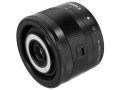

此款镜头除具有与一般微距镜头相同的约1倍放大倍率外，还配备了超级微距模式，可提供约1.2倍最大放大倍率，可将被摄体细微之处放大呈现。镜头前镜片周边集成了环形LED灯，且左、右两侧可单独开关、分别控制强弱，从而获得不同的照明效果，而配备的双重IS影像稳定器则能够有效应对抖动。
手里180L太长了，一直想要个短焦微距 一片UD，两片非球面，外加双重防抖，配置够红圈标准了 实拍效果也很满意，颜色饱和度高，分辨率很好。
等效焦距45，随身携带啥都拍，在我M1上对焦不算快，和22/2差不多，但利索不犹豫 录像时貌似防抖也工作，至少在相机屏幕上我觉得图像很稳 价格不贵也能算优点，不过镜片都指甲盖大小，镜身还是塑料的，想来佳能应该能做到更便宜
体积略大还是外变焦 接口不是金属对我而言倒不算多大的事，毕竟可以减少重量，毕竟定位是轻便，再说在备机上也不常换镜头 镜头锁我经常拧错方向，不知道别人怎么样，与现在方向相反应该更顺手